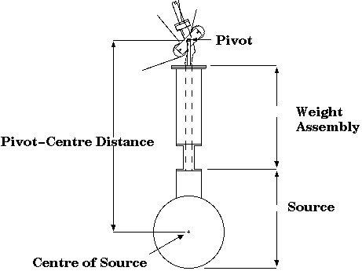

Calibration Source Location
http://www.sno.phy.queensu.ca/private/calibration/manipulator/source_location.html
Updated 2 August 1999
This note describes the current information available on positioning
the calibration source. While the general information will not change,
the user should be cautious about specific numbers used.
Coordinate System
The manipulator positions sources in the detector relative
to a ficticious global coordinate system which is defined
as centred on the position that the engineering drawings intended the
centre of the Acrylic Vessel to hang. The axes of this coordinate system
are oriented the same as detector coordinates: Z in up. Y is
"construction north", i.e towards the pipes in the AV chimney. X is towards
the control room door.
In fact the AV is currently hanging about 4 cm below the global coordinate
system origin. The AV position in global coordinates is measured using
neck monitors and should be recorded in the data stream. It
only changed during water fill and is now very stable.
The relative position of the global coordinate system and the
PSUP is inferred from measurements made by Davis Earle. These
measurements will be incorporated later.
Pivot - Centre Offset
The part of the calibration source manipulator lowered into the detector
consists of a carriage and weight assembly below which is attached the
calibration source (see figure).

The manipulator system uses the pivot of the manipulator carriage (the
point that the ropes are attached to)
to
position a source in the detector. The pivot is used because the distance
from the pivot to the centre of the source depends on which source is
used. When doing calibration runs with the source, the detector operator
should record in the log book the pivot position. Sometimes the
operator also records the location of the centre of the source. However,
anybody analyzing data from the sources should be sure that the operator
recorded the correct position for the centre of the source (there have
been several instances of using the wrong value for the pivot-centre
distance). The pivot location is the best information available on
the position of a source.
Below are the current best numbers for the distance from the
manipulator pivot to the centre of the calibration sources.
Various changes in the hardware could result in these numbers
changing so varify them before using.
| Source | Pivot-Centre Distance | Reference | Date
|
| Laserball | 66.4 cm | logbook 2 pg 78 | 99/04/28
|
| N16 | 70.97cm | logbook 2 pg 96 | 99/05/19
|